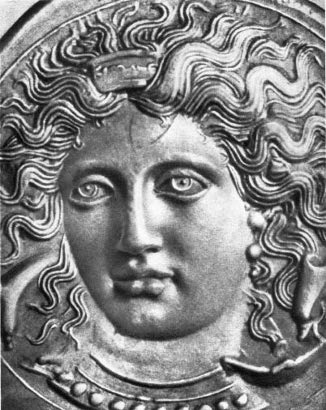
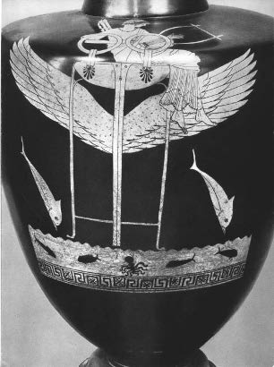
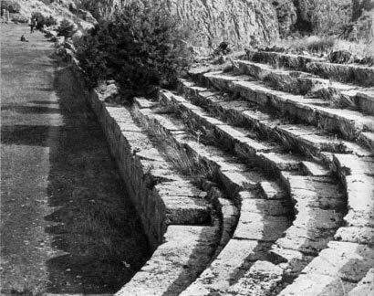
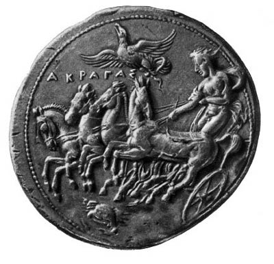

Pindaros, korkarım yakında yalnızca birkaç Yunan dili ve uygarlığı uzmanına açık olacak. Bu yetenekli şairi nitelemek için ona yakışabildiğini düşündüğü en aşağılık sözcükleri seçen Voltaire’in aşağılayarak ve çok yanlış olarak, dediği gibi bu “arabacıların ve yumruk dövüşlerinin ozanı” spor başarılarının coşturduğu bu büyük lirik ozan, halkların çoktan yitirmiş olduğu yeri “eller ile ayakların erdemi” dizeleriyle kazanmış olsalar bile, bugün yığınların coşkusunu artık kabartamaz.

Nympha Arethusa. Atina’nın Sicilya’da yenilmesinden sonra,
413’te basılan Syracusae parası.
Her şeyin rastlantısal ya da düşünülmüş bir seçime dayandığı bu yapıtta, onunkine denk bir çapta başka birçok zekâyı gözardı ettiğim daha da edeceğim gibi, Pindaros’u da “ihmal” edebilirdim. Beni birçok neden engelledi. Bu yapıtı hemen bütünüyle İon ya da Atina uygarlığının birkaç yönü ile sınırlamak istedim. Yunanistan’ın geri kalan yerlerinde ve özellikle soyluluk rejimine bağlı kalan ülkelerde üretilmiş o yüksek şiirsel değerlere de değinmek istedim. Başını Sparta ve Thebai’nin çektiği Dorların Yunanistanının hakkını vermek istedim. Öte yandan, Ronsard’ın coşkulu tarzında, Pindaros’un parlak şiirini sevme hazzından, okurlarımı mahrum etmeye gönlüm razı olmadı. Bu göz kamaştıran şair Aiskhylos ve Aristophanes (Aristofanis) ile birlikte, üç ustadan biridir, Yunan şiir sözünün (doğal olarak, başka dile çevrilemeyen) prenslerinden biridir. Neyse, garip işi, spor başarılarını koro şarkılarıyla övmek olan bu şair, yine bu işi nedeniyle, Syrakusa tiranı (despotu) Hieron (İeron), Akragaslı tiran Theron (Teron), Kyrene (Krana) kralı Arkesilaos (Arkisilaos) gibi, döneminin çok büyük kişileri ile ilişkiye girmiştir. Bunlardan birinin sarayında yaşamış, onların danışmanı ve dostu olmuştur. Çok az görülen bir bağımsızlığa sahip bir danışman, övgünün orta yerinde bile, övdüğü prense gerçeği söyleyecek güçte bir dost: Aman ne görkemli bir manzara!
Böyle bir şairin yapıtına nasıl girmeli? Pindaros’u anlamanın onu, belirli birkaç koşuk (od) içinde, yaptığı bu iş düzeyinde kavramaktan, kendi tarzında işlediği destanın efsanevi izleklerini ve Hesiodos’un ya da başka eski şairlerden aldığı izlekleri, bize kendinden ve şiirinden söz ettiği lirik duygulanımları; görünüşte “hoş bir düzensizlik” içinde aslında sadece aykırı biçimde kurulup çatılmış bir düzenle birbirine karmış olduğunu görmekten başka bir yolu yoktur. Sonunda, onu anlamak, bir Fransız yorumu ile de yabancı sözel anlatım içerisinde, hem çok dolaylı hem de olabildiğince aracısız yoldan onun şaşılası ama doğalca eğretilemeli üslubuna yaklaşmaktır.
Öyleyse bu koşuklardan birkaçına bakalım. Bunların sıkı sıkıya ama ustaca birbirine bağlanmış birkaç cümleden oluştuklarını ve denebilirse belli bir düzen içinde aktarıldıklarını göreceğiz.
Yazmış olduğu ilk zafer koşuğu olan onuncu şiir Pythia (Pitia) koşuğu, başyapıtlarından biri olmasa da anılmaya değer; çünkü hemencecik bütünüyle Pindaros’u bu şiirde görürüz. Düşüncesinin temel çizgileri, sarsılmaz dinsel inancı, Apollon’a candan bağlılığı, Sparta ve onun aristokrat yönetimlerine karşı hayranlığı, kendine kalıt olarak kalan erdeme övgüsü, atletlerin başarısına verdiği öncelik, en sonu kompozisyonun tasarlanmış düzensizliği, üslubun parıltılı yoğunluğu: İşte şiirin özü budur, Pindaros, burada hemen kendini ele vermektedir.
Şair, Thebai’de ve yirmi yaşındadır. Yıl İ.Ö. 498’dir. Kuşkusuz soylu ailesinin ilişkileri sayesinde –eski bir Apollon rahipleri ve sömürge kurucuları ailesinden geliyordu– Tesalya prensleri olan Aleaslardan bir dostunu övecek bir methiye siparişi alır. Galibin adı Hippokleas’dır (İpokleas). Delphoi’da “gençler” bölüğünde iki yarış ödülü kazanan bir delikanlıdır bu kişi. Pindaros Teselya’ya gitmiş, prensin konuğu olmuş, koro şarkısının icrasını yönetmiştir.
Koşuk, Pindaros’un yapıtının önemli bir bölümünde epigraf olabilecek şu sözlerle açılır: “Ey eşsiz Hakedaimon! (Hakedemon)” Şair, güftenin bu açılışıyla –o büyük Thebai’liyi boyuna kahramanlık erdeminin örneği olarak över– ikisi de Herakles’in soyundan gelenler tarafından yönetilen Sparta ile Tesalya’nın akrabalığı üstünde durmaktadır. Sonra genç koşucunun övgüsüne geçer. Onun hakkında çok sevdiği şu temayı geliştirir: Soylu ailelerde “oğulların yaratılışı babaların izlerini sürdürür”, yani ahlaki erdem kadar bedensel başarılar da ataların kalıtının bir parçasıdır, demek ister. Oyunda galip gelen kişi, oğlunun kazandığını gören kişi “tunçtan gökyüzüne erişmese bile, en azından ölümlülere özgü büyük mutlulukların son sınırına erişir”. Birden koşuğun merkezinde yer alan efsane patlar. Ona yol vermek için “büyük mutluluk” sözü yetmiştir. Bu efsane Hyperbore’lilerin (İpervorea) mutluluğu efsanesidir. Eski bir halk inanışına göre Borea’nın (Voreas) geldiği Kuzey dağlarının ötesinde mutlu bir halk, Hyperbore’liler yaşamaktadır. Kışın, Pindaros’un çok sevdiği Apollon’un oturduğu yer orasıdır. Kanatlı üçayağı (sacayağı) üstünde yolculuk eden Apollon ilkbaharda oradan gelir.
Efsane, şair onu anlatmadan, yalın bir biçimde canlı imgeler ve uçucu ve şaşırtıcı anıştırmalarla esinlenmiştir. Tamamlanmamış, ama hayale tamamen açık, içinde hayallerin düşçünün coşkusunu kucak kucak her yöne götürdükleri bir rüya gibi görünür. Böylece Hyperbore’lilerin şölenlerinden birinde ansızın Perseus’un (Perse) ortaya çıktığını görürüz. Perseus onları Apollon’a görülmemiş eşek kurbanlar adarken bulur. Şairin dediğine göre, Apollon bu şehvetli hayvanların kurban edilmesinden hoşlanır. Pindaros dobra dobra üslubuyla şöyle yazar: “Onların kurban ettikleri hayvanların şehvetlerinin uyandığını görünce Apollon güler.” (Aslında, bu cinsel istekten kudurmuş eşeklerin kurban edilmesi öyküsü yabancıl bir öyküdür! Yunanlılar tanrılarına asla eşek kurban etmemişlerdir.)
Ama şair bu mutlu halkın şölenlerinde “Musa’nın eksik olmadığını... Genç kızların lir ve flüt gürültüsü içinde koro halinde şarkı söylediklerini” hemen ekler.
Aykırılık oluşturan başka anlatımlar da vardır. Hyperbore’liler ülkesinde ortaya çıkan bu Perseus az önce Gorgo’yu öldüren kahramandır: “Yenilerde bir adanın halkına taştan ölümü götüren yılanlarla kaplı bu başı” hâlâ ellerinde tutmaktadır (Pindaros’un cesur üslubunda bunun anlamı “taşa çeviren ölüm”dür). Bununla birlikte şair “yapıp çatanlar tanrılar ise hiçbir olay bana inanılmaz görünmez” diye ekler.
Pindaros, yazı sanatını tanımladığı şöyle bir söz üstüne burada efsaneyi bırakır: “Ezgilerim güzel yün yumaklarına benzerler, arılar gibi bir konudan öbürüne uçuşurlar.”
Hippokleas hakkında son bir söz: “Şair düşünde ona genç kızları gösterecektir.”
İşte bir gençlik yapıtı daha (Pindaros otuz yaşındadır) bu koşuk içinde hiç efsane olmayan, şairin yüreğine çok yakın tanrılara yalın bir yakarmadır. Bu ondördüncü Olmpia koşuğunda o, delikanlılar stadyumunda bir gencin başarısını da kutlamaktadır.
Bize göre bu koşuk kısaca şairin esininin derindeki kaynağını ortaya çıkarır; bu kaynak Kharit’ler (Harit) sevgisidir. Pindaros önce insan tipini anımsatır; bu tiplerde “ölümlülere göre bütün hoşlukların, bütün tatların” parıldadığı görülür. “Bunlar esinli şair, güzellikle süslü insan, şanla parıldayan insandır.” Oysa bu üç nimet –deha, güzellik, şan– Kharit’lerin armağanlarından başka bir şey değildir. Dünyada her şeyi onlar yönetirler: “Tanrılar bile değerli Kharit’ler olmadan ne oyunların tadını alabilirler ne de şölenlerin... Pythialı Apollon’un yanında bulunan tahtlarında, Kharit’ler babaları Olympos’un efendisinin görkemini kutsarlar.”
Şair bu üç güzeli adlarıyla anar: “Sen ey usta Aglaia (Aglaia Ün dağıtır) ve sen, Euphrosyne (Efrosini), uyumun büyülediği (Euphrosyne Bilgelik anlamına gelir, ama Pindaros’a göre her türlü bilgelik şiirdedir) ve sonra sen, Thalia (Talia), sevdalı şarkılar... (Thalia Güzelliği, Gençliği ve Neşeyi veren Kharit’dir) gör, Thalia, şu çevik yürüyüşlü alayın zafer sevinciyle ilerleyişini... Senin aşkınla Olmpia’da kazandığı için Asopikhos’u (Asopihos) övmeye geldim...” Genç atlet yetimdir. Şair nympha Ekho’yu anımsatır, şöyle der: “Gel şimdi Ekho, in Persephone’nin (Persefoni) karanlık duvarlı sarayına, babasına şanlı bir haber ilet... Anlat ona oğlunu, de ki, Thalia Pisa’nın görkemli vadilerinde, eşsiz zafer kanatlarıyla taçlandırdı onu.”

İlkbaharda Delphoi’ya dönen Apollon,
kanatlı bir sacayak üstünde yolculuk.
Demek ki kutlanan olayda her şey Kharit’lerin işi olarak verilir. Pindaros’un krallığı, hazzın ve şehvetin krallığı değildir; Aphrodite’nin krallığı değildir. O, Yunanlıların epaphroditon (Epafroditon) dedikleri, “çekici” erkek demek olan şeye, hiçbir zaman en ufak bir değer vermemiştir. O, epichari’yi (epihari), yani iyi yürekliyi över. Onun krallığı Kharit’in krallığıdır.
Gençliğinin bitiminde, Pindaros’un yaşamında ağır bir bunalım başlar; bu bunalım önce İ.Ö. 490, sonra 480 ve 479 yıllarından itibaren halkının içinden geçtiği bunalım, yani Med savaşları bunalımıdır.
Şunu açıklıkla belirtmek gerekir. Pindaros halkının tarihinde Med savaşlarının anlamını kavramamıştır ya da ancak darbeden sonra ve güçlükle kavramıştır.
Marathon yılında aşağı yukarı otuz, Salamis ve Plataiai (Platea) savaşları sırasında aşağı yukarı kırk yaşındaydı. Yapıtında, çok önemli olduğu halde, Med savaşlarının birincisinden hiçbir yansıma yoktur. Yapıtta Marathon’un adının olmaması demek değildir bu. Bu ad orda birçok kez yinelenir, ama her zaman şairin övdüğü atletlerden birinin kazandığı bir sportif başarıyı anmayla ilgilidir. Ona göre Marathon bir özgürlük zaferinin adı değil, bir spor alanının adıdır! (Kuşkusuz birçok Parisliye göre savaşların, hatta Fransız şairlerinin adının yalnızca metro istasyonları oldukları gibi!)
Pindaros’un şiiri kavranmak istenirse, ona göre, sportif bir zaferin, en azından askeri bir zafere, özellikle Atinalı “halk”ın kendine göre çok düşük bir bedelle, bir demokratik özgürlüğü kurtardığı Marathon zaferine denk bir değer taşıdığını anlamak gerekir. İnsanın özgürlüğü, saygınlığı her şeyden önce bedenine sahip olmasındadır. Ona göre “Gençlerin güzel kolları ve bacakları” insan yaşamının temel kazanımlarından biridir; sürekli bir irade edimi, eksiksiz bir maddi ve manevi çile pahasına elde edilen bir kazanımdır.
Salamis yılı gelir. Pindaros kırkına yaklaşır. Thebai tarafını tuttuğu bilinir: Thebai işgalcinin hizmetine koşmuştur. Herodotos’dan Polybios’a kadar Yunan tarihçileri oybirliği halindedirler ki Thebai Yunanistan’a ihanet etmiştir.
Polybios “Thebai’lilerin Yunanlıların davası için savaşa girmeyi reddettiklerini ve Perslerin tarafını seçtiklerini” ve “bir şiirle barışı korumaktan yana olduğunu açıklayan şair Pindaros’u övmek için bir neden olmadığını” yazar.
Demek ki, öbür Yunan sitelerinin halktan en ağır özverileri, yangın ve yıkıma teslim edilen toprakların boşaltılmasını istedikleri anda, Pindaros, savaşın kendilerinden uzak olduğu hemşehrilerine istilacıya direnmemeyi öğütlüyordu. Bu şiirden kalan dizelerden ikisinde kullandığı sözcükler onun, dövüşmek isteyen halk sınıflarına seslendiğini, onları soyluların barışını, oligarşik hükümetin Perslere yaptığı candan karşılamayı kabul etmeye çağırdığını gösteriyor gibidirler.
Aslında, atletlerin ve geçmişteki kahramanların ozanı Pindaros’un Yunanistan’ın felaketine, gözleri önünde oynanan özgürlük dramasına duyarsız kalmasında garip bir şey vardır. Bir yumruk dövüşü ya da pankreas güreşinde zafer onu Salamis’den çok nasıl coşturur?
Kuşkusuz, Pindaros’da daha sonra birtakım pişmanlıklar görülmüştür. Ama Salamis’ten hep sıkıntıyla söz eder. Zaferden birkaç yıl sonra Aigianalı (Egianalı) dostlarından birine gönderdiği sekizinci İsthmia (İstmia) adlı koşukta hâlâ bu sıkıntılı ton vardır. Şair orada ısrarla Yunanistan’ın “felaket”inden söz eder. Onun adına yine Musa’ya başvurma hakkını ister; şöyle söyler: “Büyük sıkıntıdan kurtulanlar, bırakmayalım artık alınlarımızı taçsız... Şair, gam çekip durma.” Artık felaket geçmiştir: “Başlarımızın üstünde asılı taşı, o Tantalos kayasını bir tanrı uzaklaştırdı bizden. Yunanlıların cüretine karşılık çok ağır bir felaket... Her şey sağalır ölümlülerde, yeter ki özgürlükleri olsun.” Parça, bütün olarak, Salamis galiplerine bir övgü olmaktan çok uzaktır. Ne zafer ne de şan, yalnızca felaket ve yas söz konusudur. Sadece sonuna doğru, şair Yunanistan’ı kurtaranların anlatımına girer: Elinde tuttuğu bu özgürlüğü Yunanistan için dövüşmüş olanlara borçlu olduğunu, yine de açık açık değil de, örtülü olarak kabul eder. Özür makamında, felaketin Yunanlıların cesaretini aştığını söyler. Doğrusu bu Atinalıların değil, Thebai’lilerin cesaretidir. Pindaros aslında olayın mutlu sonu için Tanrıya, yalnız Tanrıya şükreder. Pindaros’tan hiç de daha az dindar olmayan Herodotos olanları doğru bir biçimde yerine oturtur; şöyle söyler: “Atinalıların Yunanistan’ın kurtarıcıları olduklarını söylersek, gerçeklerden uzaklaşmış olmayız: Büyük kralı püskürtenler, hiç değilse tanrılardan sonra, onlar olmuştur.”
Öbür pişmanlıkları bir yana bırakalım. Salamis’te Aigina yiğitliğine methiye düzen Pindaros, Yunan dehasının oluşturulduğu bu belirleyici yıllarda Atina’nın oynadığı Hellen birliğinden yana üstün rolün övgüsünü yapmayı her zaman ihmal etmiştir. Eğitiminde olsun, kendi üstün yeteneğinde olsun hiçbir şey onu, daha o zamandan, bilimsel araştırmanın sitesi, “felsefe”nin sitesi olan bu siteyi anlamaya hazırlamıyordu.
Atina’daki ortam, V. yüzyılın bu ilk yarısından itibaren, Thebai’ye göre, bir “bilgelik” ortamı, dinin aklın yaklaşımlarından korkmadığı bir ortamdır. Pindaros bundan hep tiksinmiştir. İonia’lı ve Atinalı bilginlerin ortaya koydukları sorunlar ona dünyanın en anlamsız şeyi gibi görünürler: Ona göre, bunlar “Hikmet’in ham meyvesini devşiren” insanlardır. Pindaros –bu onun Atina’ya karşı dostluk duymayışını açıklar– V. yüzyılın ortasına kadar felsefeden etkilenmeden kalmış bir insandır. İonia’lı bilginlerin sordukları sorular (dünya hangi maddeden yapılmıştır? Güneş tutulmasını doğuran olay nedir?), böylesi sorular ona göre uzun zamandan beri ülkesinin bir şairi olan Hesiodos ve Apollon dini tarafından yanıtlanmış sorulardı. Bilginin sorguladığı olaylar ona göre tanrıların mucizeleridirler. Haklarında sorulacak hiçbir soru yoktur.
Şimdi şairimizin önemli koşuklarından birkaçını, örneğin altıncı Olmpia adlı koşuğu ele alalım. Bu şiir çok büyük bir kişi, Hieron’un en önemli subaylarından biri olan Syrakusalı Agesias için yazılmıştır.
Agesias’ın ailesi İamid’ler ailesidir: Bu aile Apollon ile Peloponesoslu bir nympha (Nimfia) olan Evadne’den (Evantia) geldiğini öne sürer; Evadne’nin kendisi de Poseidon (Posidon) ile Eurotaslı (Evrotoslu) bir nymphanın, Pitane’nin kızı imiş. Demek ki İamid’ler iki büyük tanrının soyundan gelmektedirler. Olympia’da rahiplik yaparlar. Agesias şansını Syrakusa’da denemeye gelmiştir. Hieron’un yanında parlak bir kariyer yapmıştır. Pindaros’un methiyesi onun Olympia’da katır koşulu araba yarışındaki zaferini över. Bu od önce Agesias’ın ana tarafından yurdu olup Olympia’ya çok uzak olmayan Arkadia’daki Stymphalos’da (Stimfalos), sonra ikinci olarak Syrakusa’da temsil edildi.
Yapıt birbirine eşit olmayan üç bölüme ayrılır. Birinci bölüm yarışın galibinin övgüsüne ayrılmıştır. Bu övgü tüm şiire giriş niteliğinde görkemli bir görüntüye dayanır. Görkemli bir sarayın kurulduğunu görürüz. Sarayın revakı görkemlidir: Ufka kadar pırıldayan altın sütunlar göz kamaştırır. Saray şiirin kendisidir adeta; görülmemiş sıra sütunlar hem Olympia bilicisi, hem şampiyonu olan Agesias’ın şanıdır. Tüm giriş bölümü parlak anıştırmalarla doludur, biri bir biliciye, bir diğeri Zeus’un gazabına uğramış başka bir savaşçıya yapılan anıştırmalardır. Zeus’un toprakta derin uçurumlar açıp, atı ve koşumlarıyla birlikte, o zamandan bu yana Hellen birliğinden yana olan Thebai’li halk kahramanını fırlatışı anlatılır. Bu başlangıç tümüyle güneş ışınlarının aydınlattığı dağınık görüntülü bir koruluk gibidir.

Delphoi stadyumu.
Ezginin ikinci bölümüne –bu, efsanenin yer aldığı en önemli bölümüdür– geçmek için Pindaros Agesias’ın arabasının sürücüsünde “katırlarını koşup Agesias soyunun kaynağındaki güneşle dolu yola sürmesini” diler... “şarkılarımızın kapıları açılsın ardına kadar önlerinde.”
İnançlı şairin ağzından katmerli bir tanrısal çekiciliğin güzel öyküsünü duyacağız. Vaktiyle, Eurotas kıyılarında genç bir kız, nympha Pitane yaşarmış. “Poseidon ile birleşip mor saç örgüleri olan bir çocuk dünyaya getirmiş. Bakire analığını giysisinin kıvrımları altında saklamış...” sonra tanrıdan gebe kalıp doğurduğu çocuğu bir başka ırmağın, Alphea’nın (Alfea) kıyılarına yollamış. İşte Evade’nin yetiştiği ve “Apollon ile, ilk kez Aphrodite hazzını tattığı yer orasıdır.” Baba bu kabul edilemez ve gözkamaştırıcı macera hakkında biliciye danışmıştır. “Oysa Evade bu sırada, kırmızı kemerinden ve gümüş kutusundan vazgeçip mavi korulukta kehanetlerle donatılmış bir çocuk doğurmuş. Altın saçlı tanrı onun yanına iyiliksever İlithye’yi (İlitia) ve Parka’ları yerleştirmiş. Ve onun böğürlerinden, tatlı bir rahatlamayla İamos çıkmış ve onu hemen ışık karşılamış. Çok üzgün ana, çocuğunu toprakta bırakmış. Ama tanrıların isteğiyle, gök gözlü iki yılan ona bakmış ve onu arıların zararsız ağusu ile beslemişler.”
Bu arada Pindaros’un üslubuna özgün rengini veren çelişik anlatımları fark etmiş olacağız. Örneğin: Bakire analık ve arıların zararsız ağusu gibi. Şair şöyle devam eder:
“Çocuk böylece beş gün yaşamış. Sazlar ve içine girilmez böğürtlenler arasında saklı çocuğun narin bedenini altın renkli ve erguvan kırmızısı çiçekler pırıltılarıyla kaplıyorlarmış. Anasının çocuğa ölümsüz İamos adını takmasına neden olan durum buymuş.” (Sarı ve erguvan kırmızısı ışıltılı bu çiçekler yabani menekşelerdi; Yunan dilinde bunlara ion denir, sözcük aynı zamanda mor demektir.)
Bu sırada, Delphoi’dan, Apollon oğlunu ister. Efsanenin son sahnesi bize delikanlının vaftizi ya da kutsaması diyeceğimiz şeyi gösterir.
“Altın taçlı hoş Iuventus’un meyvesini alınca Alphea’nın yatağına kadar inmiş ve büyükbabası Poseidon’un yaygın gücünü ve tanrıların kurdukları Delos’ta nöbet tutan Okçu’yu yardıma çağırmış. Orada, karanlık gökyüzü altında, başı için bir halkın koruyucu krallığının onurunu dilemiş. Babasının ona verdiği şu yanıtı kendi kulaklarıyla açıkça duymuş: ‘Kalk oğlum ve yürü. Herkesin ortak malı olan ülkeye git. Sesimin izini sür.’ Böylece yüce Kronos dağının sarp doruğuna kadar gitmişler ve orada, tanrı ona iki katlı bir kehanet hazinesi ihsan etmiş...”
Burada böyle bir şiirin şatafatı görülmektedir. Şiir de, tuhaf gelişme biçimiyle, şairin andığı çiçekler gibi, içimizi sarı ve erguvan rengi ışınlarla doldurur. Bir güneş ışıltısıyla parıldar, değişken bir gökkuşağı gibi ışıldar.
Koşuğun son bölümü güncel olaylara, galip gelene düzülen övgülere döner; bu aynı zamanda Pindaros’un şiirinin övgüsüdür. Boiotia’lıların (Viotia) cahilliği hakkında Atinalıların kaba bir alayını, onu derinden yaralamış bir alayı yeniden ele alan şair “Boiotia’nın domuzlarına sürülen eski lekeyi yalanlama”yı bileceğini söyler. Şiiri bu noktada sövgüye karşılık vermeye yöneliktir. Esrarlı ve gizli anlamlarla yüklü diliyle konuşan esinli şair olduğunu söyler: “İçimi kaynakların soluğuyla dolduran şarkılar söyleyen bir bileyi taşı var dilimde.” Sonra, yeni yurdunda Agesias’a eşlik eden ve koşuğu orada icra edecek korobaşına seslenerek şöyle der: “Sen doğru bir haberci, lüle saçlı Musaların gizli sözü, eşsiz ezgilerle dolu bir tatlı vazosun.”
Şiirin son dizesi denizlerin hakiminden kendisi için bir dilektir:
“Açtır ezgilerimin güzel çiçeğini.”
Galiba övgü, efsane, galip ya da şair için dileklerden oluşan şiirin bu üç bölümünün bağlantısını açıklamak, yorumlamak faydasız. Bütün bunların tarihsel nedenlere dayandığı açıktır, ama şiirin dışında da kalır. Yine geçiş ya da uygun durumlardan oluşmayan ama yapıtın şiiri içinde olan bir bağ vardır. İlk bakışta bundan etkilendim.
Ezginin revakı önünde altın sütunlar, güneşli yola atılan katırlar, sonra asıl imgeler akını, bir tanrının dölü ile yüklü ve kırmızı kuşaklı kadın, tarla çiçeklerinin ışığında yıkanan çocuk teni, Alphea’daki vaftiz sahnesine hakim olan karanlık gökkubbe ve son olarak, şairin dilindeki bilenecek ezgili taş, lüle saçlı Musaların gizli sözü –bütün bunlar tek bir şiiri, her şeyi özsuyu ile besleyen üslubun fışkırmasıyla yapıta anlatılamaz sürekliliğini veren garip imgelerden ve rüya figürleri gibi şeylerden oluşma hem yakın hem de göksel bir şiirin bir tür yarı baygın sayıklayan görünümünü oluşturur. İlk dizeden sonuncusuna kadar, nadir ve çok güzel bir çiçek gibi açılan bir üslup doğar.
Pindaros birkaç kez Sicilya’ya yolculuk yaptı. Akragas’lu Theron ve Syrakusa’lı Hieron gibi prenslerin dostu olarak yaşadı. Büyük Simonides ve Bakhylides (Vakhilidis) ile yarışarak onların övgücüsü oldu. Ayrıca onların danışmanı ve dostu oldu. Ve bu güç danışmanlık ve övgücülük görevinde, onu her tür cesaretle donatan kendi dinsel inancına dayanan en sağlam ahlak değerlerinin çağrısını çıkardı. Birtakım önemli siparişler, daha esnek bir şair olan Bakhylides’e gitmek üzere, elinden kaçtı.
Üçüncü Pythia koşuğu bize Hieron ile Pindaros’un ilişkilerinin sıkılığını gösterir. Aslında bu bir methiye değildir, bu, bir spor zaferi nedeniyle değildi, Hieron’un acısını çektiği bir kum dökme bunalımı sırasında şairin yazdığı özel bir mektuptur. Bir dostun mektubu, bir hastaya yollanan teselli mektubudur bu.
Şair Asklepios’un (Asklipios) ustası Kentaur Kheiron’un (Hiron) –en eski şiirsel geleneğe göre hekimliğin babası– artık hayatta olmayışına esef etmekle başlar. Sonra hasta prense hekimlik tanrısı Asklepios’un doğuşunu anlatır. Apollon ile nympha Koronis’in aşklarının öyküsüdür bu. Koronis düşçü bir kızdı, “başka birçokları gibi, her zaman bilinmeyene tutkundu: İnsani yaratıklar arasında en işe yaramaz türde olaylar önünde duranı küçük gören ve gerçekleşmez umutlarını hayallere bağlayan düşçülerdir”. En rastlantısal duruma sunulan bir avdır Koronis. “Karnında tanrının has tohumunu taşıyan” bu nympha, geleneğe göre, Apollon’un ona düzenlemeyi vaat ettiği düğünü bekleme sabrını göstermemiş: “Arkadia’ya bir yabancı gelmiş” –sıradan bir yolcu, ilk gelen– “onunla yatmış”.
“Tanrı tüm olanları bilen ruhundan başka bir sırdaşa danışmasına gerek olmadan ihaneti öğrenmiş... Ne eylemde ne düşüncede, ne tanrı oyalar onu ne de ölümlü.” Kız kardeşi Artemis’in eliyle sadakatsiz kadını cezalandırmış, Artemis oklarıyla delik deşik etmiş onu.
Koronis’in cesedi yakınlarının arasında odun yığını üstünde uzanmış ve Hephaistos’un canlı alevi bedenini sarmışken tanrı birden karnındaki dölü hatırlamış: Hayır, demiş, benim kanımdan bir oğulun acı bir ölümle yok olmasına ruhum dayanmaz...” Apollon oraya varır; önünde alevler açılır. Çocuğu bulur, anasının karnından çekip alır. Onu hekim olarak yetiştirecek olan Kheiron’a emanet eder. Asklepios’un doğumunun öyküsü böyledir.
Hekimlik tanrısı ile ilgili bu efsane ile öykünün anlatıldığı hasta arasında doğal bağ dışında Koronis kişiliğinde Hieron’a yönelik ölçülü ama açık bir ders de vardır. Genç ananın niteliğini belirten şair düşçü anlayışın tehlikesi ve hayallere kapılmaktaki yanlış üstünde durur. Şiirin sonunda, hastaya yapılan çağrılar bu doğrultuda gelişecektir.
Pindaros öyküsünü Asklepios’un mesleğinin görkemli bir tablosu ile sürdürür. Bu tabloda hepsi iyileşen, ameliyat ve ilaçlarla “ayağa kaldırılan” yaralılar ve hastalar –ülser hastaları, etleri kargı ve sapanla açılmış yaralılar, salgın hastalıklar, yaz sıcağı, kış soğukları ile harap vücutlar– alayını gösterir.
Bununla birlikte, Asklepios kendini gerçekleşemez işlere de kaptırmıştır: Doğayı zorlamak istemiş, çoktan ölmüş bir adamı ölümün elinden çekip almıştır. Zeus’un yıldırımı hastayı da hekimi de gık bile demeden kaderin istediği ölüme döndürmüştür.
Koronis portresinin esinlediği düşüncelerin yamacına götürülüyoruz. Olanaksızı aramamak, “ayağımızın dibinde olana” bakmak gerekir. Peki ne vardır ayaklarımızın dibinde? “Öldürücü bir durum.”
Şair işte burada yürekli ve çok güzel bir söz eder: “Ey ruhum, ölümsüz yaşama can atma, sana verilen eylem alanını kullan.” İşte bir hastaya yöneltme cesaretini gösterdiği öğüt budur. Asklepios kuşkusuz birçok hastayı iyileştirmiştir. Yine de sen ölmen gerektiğini hatırla ve o zamana kadar çalış. Ayrıca Pindaros bu dersi ders havasında vermez. Hieron’a “Şunu yap, bunu bekleme,” demez. Bunu kendisine söyler. “Ey ruhum, ... can atma.” Bu dolaylı anlatım dostluk kadar incelik gereğidir de.
Prens ile onun arasında bu güvenli dostluk havası kurulduktan sonra şair yeniden başlar ve çağrısını tamamlar. Büyük Hieron’a tevekkülden söz etme cüretini gösterir. Sen tanrıların lütfunu gördün, der ona, halkının prensi ve yöneticisisin. Kuşkusuz senin için yaşam her zaman günlük güneşlik olmadı. Ama yalnız değilsin sen: Geçmişteki kahramanları düşün. Bu da genel davranışa ilişkin şu özdeyişi getirir: “Gerçeğin (ve gerçek Pindaros’ta genellikle gerçelik demektir) yolunu bilen insan, gerçekliğin yolunu izleyen insan, tanrıların ona gönderdikleri mutluluktan yararlanmasını bilir. Ama göğün yüksek katlarında esen yeller durmadan değişirler.”
Bu söz çok gerçekçi, çok olumlu karakterli bir insan olan Hieron’a çok uygundur; çünkü o değişkenlik yasasından habersizdir.
Pindaros sözünü tamamlarken, sanki fazla dolaysız ve fazla öğütçü olduğundan ürkmüş gibi, bir kez daha kendine döner. “Yalın bir talih içinde yalın, büyük bir talih içinde büyük olmak isterim.” Gururla kendi büyüklüğünü de söyler. Şairdir o: Şan kazandıran onun şarkılarıdır. Hieron’un gücü gibi büyük bir güç nadir ise de kendisi gibi bir büyük şairin de o kadar nadir olduğu izlenimi uyandırır. İnsan bir an Fransız şairinden erken bir yankı duyduğunu sanır:
“Ronsard ne kadar da çok övmüş bir zaman!
Diyeceksiniz, mısralarımı söyleyerek”[6]
Ama duygu tamamıyla aynı değildir. Pindaros’ta hem bir alçak gönüllülük hem de daha derin bir gurur vardır: İkisi de ona insanlara buyurulan yasayı bildiği için tanrılarca ihsan edilmiştir.
Pindaros ile prensin ilişkilerini açıklamadan önce kendimize, yalnız güzelliğinden ötürü onuncu koşuk olan Nemeia (Nemea) efsanesini okuma hazzını verelim. Yalnız güzelliği mi? Değil. Pindaros’un tüm yapıtı derslerle doludur. Şair için güzellik düşüncesinin doğruluğuna vermeyi bileceği –bunu ona tanrılar verirler– en yetkin anlatımdır.
Onuncu Nemeia manzumesi güreşte galip gelen bir Argoslu için yazılmıştır. Üçlünün birincisinde Pindaros efsane tabanlı bir tuvali, büyük Argos efsanelerini anımsayıp geniş fırça darbeleriyle resmetmektedir sanki. Bu bir tanrılar, kahramanlar, Argos’tan ünlü güzellikler yığınıdır. Alkmene (Alkmini) ile Danae (Ganai), Zeus’u yataklarına alırlar; Perseus Meduna’nın kafasını getirir; düğünlerinin olduğu gece Danaos kızlarından yalnız Hypermestra (İpermestra) kocasını esirger, hançerini kınına sokar; Epaphos’un Mısır’da sayısız kentler kurduğu görülür; en sonu, Argoslu bir kadının oğullarından en ünlüsü olan Herakles, ölümsüz tanrıçaların en genci olan eşi Hebe’nin yanında dimdik Olympos’ta ayakta görülmektedir.
Bu temel tuvalin köşesinde, üçlünün ikinci bölümü zafer kazanan Argos’lu Theaios’u (Teos) tanıtır. Theaios burada ön plana konulmuştur ama geride bir yer tutar: Çeşitli oyunlarda kazanmış olduğu çelenkleri taşımaktadır. İçindeki zeytinyağı ile birlikte, Atina’dan getirmiş olduğu büyük anforayı, hani arkeoloji dolayısıyla iyi bildiğimiz “panathenaia” (panatinea) denilen o anforalardan birini bile görürüz. Oyunlarda galip gelen yakınları kendisi ile birlikte modern bir küme oluştururlar.
Ondan sonra şair, belli belirsiz resmedilmiş bu temel tuval üstünde ve kısaca ele alınmış o çağdan birkaç kişilikle birlikte, ışığın tam ortasında ve inanılmaz bir desen sağlamlığı ile efsanesini geliştirir. Bu, iki atlet tanrının, atletlerin koruyucuları Kastor ile Polluks’un öyküsüdür. Bu, hem biçim güzelliği bakımından hem de duyguların gücü yönünden çok güzel bir öyküdür.
İki kız kardeş Sparta’da, doğum yerleri olan vadide yaşıyorlarmış. Yine kardeş olan, İdas ve Lynkeus adlarında iki düşmanları varmış. Kastor’un bir meşe kovuğunda dinlendiği bir gün, keskin gözlü bir insan olan Lynkeus, delici bakışıyla, onu Taygetos’un tepesinden görmüş. ve İdas’ı çağırmış: bu belalı ikili, Kastor’u uykuda bastırırlar. İdas kargısıyla ona ölümcül bir darbe vurur.

Dört atlı araba yarışı. Agrigento parası. 410’a doğru.
Ama iki kahramandan yalnız Zeus’un oğlu ve yalnız ölümsüz olan Polluks katillerin ardına düşer. Onları bir mezarlıkta yakalar. Bunlar orada Polluks’a karşı koyarlar ve kendilerini savunmak için babalarına ait mezar taşını sökerler. Bu taşla Polluks’u tam göğsünden vururlar. Ama kahraman sendelemez: Tunç mızrağını Lynkeus’un böğrüne sokar; oğlunu yücelten Zeus ise, dumanlı yıldırımını İdas’a savurur. “İki ceset orada yalnız başlarına yanıp dururlar.”
Polluks kardeşine koşar. Kastor hâlâ nefes almaktadır, ama vücudu daha şimdiden bir hırıltıyla sarsılır. Polluks hıçkıra hıçkıra ağlar. Babası her şeye kadirdir. Sevgili kardeşini, değerli iş arkadaşını kurtaramaz mı? Polluks ona yalvarır: Bu kardeş olmaksızın o da yaşamak istemez. Bu sırada Zeus oğluna görünür. Baba ve oğul karşı karşıyadırlar. Her şeye kadir tanrı, Polluks’a zor bir seçim sunmaktan başka bir şey yapmaz: “Sen benim oğlumsun, der ona, ağzında şaşırtıcı bir tatlılıkla. Pekâlâ, şu seçimi tamamıyla sana bırakıyorum. Eğer ölümden ve iğrenç ihtiyarlıktan kurtulmak istersen, Olympos’a gel, Athena ve kara kargılı Ares’le beraber benimle otur: Buna hakkın var. Eğer ölümlü kardeşinin yaşamını kurtarmak istersen iki zıt yazgınızı birleştir: Senin yaşamının yarısı onunla toprak altında; onun yaşamının yarısı seninle göğün altın sarayında olsun.” Polluks bir an bile duraksamaz: Kastor’un kapalı gözleri yeniden açılacaktır, sesinin canlandığını işitir.
Kırk dizeli bile olmayan bu efsane eşsiz güzelliktedir: Şiirin, sınırları bile bile karıştırılmış fonu üstünde canlı renkler ve eşsiz bir uygunluk gösteren resim güçlü bir kabartıyla belirir.
Güzellik davranışlarda olduğu gibi duygularda da vardır. Bu iki güzelliğin ortak bir yanı vardır, o da soyluluktur. Bütün davranışlar –babayla oğulun karşılıklı davranışları gibi– bütün duygular, Polluks’un yalvarışı ve her şeyin üstünde, Zeus’un oğluna sunduğu ciddi seçim, en sonu, gelip kardeş sevgisine dayanan Polluks’un cevabı: Kastor’un kapalı gözlerinin yeniden açılması –tüm bunlarda bir görkemlilik vardır.
Ama bu soylulukta bayağı hiçbir şey yoktur. Tam tersine her an beklenmedik bir ayrıntı bir sürpriz etkisi yaratır. Bir ağaç kovuğunda dinlenen şu delikanlı, bir mezarlıktaki şu garip savaş –tümüyle eski bir efsane– bir tazelik ve yenilik tadı kazanır.
Pindaros’un bir prense övgü olarak yazdığı en parlak koşuklar arasında dört atlı araba yarışlarının galibi Akragaslı Theron için yazdığı ikinci Olympia methiyesini saymak gerekir. Pindaros bu methiyeyi yazdığında, Akrapas despotu Theron’un bağlı bulunduğu Emmenid’ler ailesini uzun zamandır tanıyordu. Onların başarılarını, büyüklüklerini biliyordu, Theron ile yakınlarının şimdiye dek sonunda hep kazanmış oldukları yarışları biliyordu. Cezalandırılmış ve yüceltilmiş olan Emmenid’ler ailesi, tıpkı Laios ve Oidipus ailesi gibi, insan yazgısının sadık arkadaşı, kararsızlık temasına örnek olabilir. Pindaros’ta trajik yön yoktur. O her zaman yatıştırmaya, teselli etmeye, iyiliği, tanrıların kutsallığını söylemeye eğilimlidir. Yapıtının her akıntısı onu insan ruhunun ölümsüz yaşam umuduna sürükler. Onu iyi bilen Platon, ondan bu anlamda birtakım imgeler ve kanıtlar alacaktır.
İkinci Olympia adlı koşuk genel olarak, yarışlarına varıncaya kadar Theron’un büyüklüğünü gösterir ve ona açık bir biçimde insan yüreğinin çok hoşlandığı en yüce umudu verir.
Bu şiir İ.Ö. 476 yılında yazılmıştır. Theron için büyük maceranın sonu yaklaşır. Bir şansla elde edilen on beş yıllık şanlı diktatörlük Akragas’ı hâlâ hayranlığımızı çeken bir tapınaklar çelengi ile kuşatır. Yaşamın sonu da yaklaşır. Saygılı ve dost şair için prense Feleğin yaşamlarımız üstündeki gücünü söylemenin zamanıdır. Ona insanlık durumundan ve ölümden söz eder. Ona dinin teselli edici yanını gösteriyormuş gibi göründüğünü söylemek de mümkündür.
Koşuğun başlangıcı, parlak kısa deyişlerle, Theron ile atalarının her zaman tehdit edilen yüce görkemini hatırlatır: “Akragas’ın kalesi, sitenin çiçeğidir... Ataları, birçok çabalar nedeniyle, yiğitlikte, Sicilya’nın gözbebeği idiler. Süregiden yazgı onlara göz kulak olur... Tanrıdan doğan kader mutluluğumuzu sınırsızca yükseklere çıkarır... Ama değişken akıntılar sürüklemektedir bizi: Bazen mutluluğa bazen felakete götürerek.”
Şair, mutluluğun ünlü zaferinden örnekler verir: “Kadmos’un kibirli kızları böyle dile gelmez felaketlere uğradılar. Ama acının ağırlığı onları saran mutluluğun etkisiyle yıkılır. Uzun saç örgüleriyle Semele, yıldırım çarpmasıyla yok oldu: Ama o Olympos’lular arasında yeniden yaşam buldu, Pallas tarafından sonsuza dek sevilir, Zeus da sever onu; şu sarmaşık taşıyan tanrı çocuğudur o da, çok sever onu.”
Pindaros daha ileride, Theron’un erdemlerinin övgüsüne başlar; bunlardan en önemlisi enerjisidir: “Kime karşı mücadeleye girişirse, başarı kedere son verir.” Theron zengindir: “Erdemlerle donatılan zenginlik şansa nice nice fırsat açar: Düşüncemizin içyüzünü mutluluğa gözcü koyar.”
Eylem adamında genellikle “zorunluluğa” karşı durma başarısı görülen bu gelişmenin doruğunda, en yüce söz, bir vaat ölümden sonra doğruları bekleyen Kronos’un şatosu, vaadi yer almaktadır.
“Ama her zaman geceleri eşit, her zaman günleri eşit olan doğru kişiler güneşi seyreder ve pay olarak bizimkinden daha az zahmetli bir yaşam düşer paylarına. Ne toprak ne de denizin suyu kararsız yaşamlar boyunca onların kollarından bir çaba bekler. Tanrıların gözdelerinin, iyi niyeti seven kişilerin katında, tanrıların sevdikleri gözyaşı bilmeyen bir sonsuzluğu yaşarlar. Kötüler ise gözün görmeye katlanamayacağı bir felakete uğrarlar.
“İki dünyada da uzun bir ömür sürerek, haksızlıktan tamamen arınmış ruhlarını koruma cesaretini göstermiş bütün insanlar, onları Kronos’un şatosuna götüren Zeus’un yolunu sonuna dek izlerler. Orası, çepeçevre deniz meltemlerinin yıkadığı Mutlu Kişiler adasıdır; orası kimileri toprakta biten cennet ağaçlarının dallarındaki, kimilerini suların beslediği altın çiçeklerle ışıl ışıldır. Onlar, tanrıların güçlü atasının, tahtların en yücesinde oturan şu Rhea’nın (Rea) kocasının buyruklarına uyan yargıç Rhadamanthys’in (Radamanolis) isteğiyle bu çiçeklerden bezekler bağlar, çelenkler örerler.”
Pindaros daha sonra Kronos şatosunun bu seçilmiş kişilerinden iki ya da üçünü sıralar. Bunlardan biri Akhilleus’dur. Akhilleus’un zaferleri Theron’un saygınlığını elinden almaya çalışan kimselere karşı onu hemen mücadeleye sokmaya isteklendirir gibidirler. İşte onu korkutan soluğu tıkanacak bir hınçtan yakalanan şeyler: “Koltuğumun altındaki sadakta berrak sesli birçok ok vardır. Sağduyulu kimselerin içine işlemeyi bilir onlar. Kitleyi vurmaya gelince, bir yorumcu gerekir onlara. Esinli kişi, büyük bilgisini doğadan edinmiş kişidir. Ama her şeyi bitmez tükenmez gevezelikler içinde öğrenenler onu taklit ederler, Zeus’un tanrısal kuşu karşısında, kargalar gibi, boşuna gaklamaktan başka bir şey yapmazlar. Haydi, yüreğim ger yayını doğru hedefe!”
Yorumlayalım: Esinli ve de Zeus’un tanrısal kuşu tabii ki Pindaros’tur. Ona karşı gak gak eden rakipler geveze kargalar olan Simonides ve Bakhlides’tir.
Pindaros bu öfke nöbetinden sonra Theron’a döner ve sözünü tamamlarken ona, eğer kıskançlık, kendini beğenmişliğiyle, tutar da prensin şanına saldırmak isterse, her şeyden önce prensin mücadelesiyle bozguna uğratılacaktır der. Övgüde abartılı nokta son dizelerdedir. “Kum nasıl hesaba gelmezse, bu insanın başkalarına dağıtacağı sevinçler de öyledir. Bunların sayısı söylenebilir mi?”
Pindaros’tan elimizde kalan yapıtta “Kronos’un şatosu” parçası gibi parçalar nadir değildir. Platon’un bunlardan birini alıkoyduğunu söylemiştim. O parça şudur:
“Proserpina’nın eski kirlerinden arındığı kimselere gelince, tanrıça, sekiz yıl sonra, onların ruhlarını yukarıda güneşe gönderir. Bu ruhlardan ünlü krallar, güçleri bakımından yenilmez ya da bilgelikleri bakımından üstün insanlar doğarlar. Onlar ölümlerinden sonra yaşayanlarca kahramanlar olarak onurlandırılırlar.”
Şairin doğru kişilerin mutluluğunu betimlediği şu dizeler de bu tür parçalardandır: “Onlar için, dünya gecesi boyunca, derinliklerde güneş gücü parıldar; sitelerin surları dibinde kırmızı gül bahçeleri uzanır; günlük ağacı gölgesini ve altın yemişlerle dolu ağır dallarını uzatır.”
Öbür yaşam konusunda Pindaros’ta bulduğumuz bu inançlar yine de tek inançlar değildir. O bunlara dogmatik biçimde takılıp kalmaz; bu, zaten antik dönem inanma biçimi de değildir. En inançlı Yunanlılar öbür dünya konusundaki iddialarında her zaman çok ihtiyatlıdırlar. Pindaros’ta başka yerde, insanın ölümden sonra yaşaması daha ölçülü biçimler alır. Şöyle söyler: “İnsanın yaşamı sonsuzdur. Çocuklarında yaşar, soyu unutulmuşluğa dalmamış insan, ve artık acı nedir bilmez.” Bunun anlamı şudur: Çocukları yaşarlar, o da ebedi uykuda dinlenir. İşte soyundan gelen çocukların yaşamı sürdürmesine bağlı ölümsüzlük budur.
Daha da çok sayıda başka metinlerde ölümsüzlüğü sağlayan yaşayanın belleğidir, en uzun kalıcılığı sağlayansa şairin ezgisidir. İnsanın iyi iş gördüğü için açıkça insanlık görevini yaptığı için yakınlarının, dostlarının belleğinde uzun süre yaşaması: İşte Kronos’un şatosu beklentilerinin silinip gittiği, Pindaros’un ölümlü insan durumunu kabul etmesine olanak veren düşünceleri bunlardır: “Öldüğümde çocuklarıma kötü bir ün bırakmayayım diye, dürüstlük yollarına hep bağlı kalayım ey Zeus... Bana gelince, hemşehrilerimin hoşuna gitmekten, layık olanı övmekten ve şer çıkaranları ayıplamaktan geri kalmaksızın, cesedimi toprağa vermek isterdim ben!”
Bu iki insandan hangisinin –ölümsüz yaşama inanan mı, yoksa ölümü unutan mı (“Gereken şeyi yapan insan ölümü unutur”) yoksa “Ey ruhum, ölümsüz yaşam isteme” diye haykıranın mı– gerçek Pindaros olduğunu sormak boşunadır.
İki ayrı Pindaros yoktur. İnanan ve umut eden ve unutan, bilgeliği ve vicdanı kendine yeten bir şair –en sonu, bir ilahiyatçı değil, çelişkilerle dolu bir insan vardır karşımızda. Yine de inançlı bir kişi vardır karşımızda, en azından umudunun tükendiği yerde, bilgisinin yetmediği yerde tanrılara inanır, en azından onların var olduklarını bilmektedir.
Bu içten örneklerden sonra, sonuca varmamıza olanak verecek daha resmi bir şiiri, ikinci Pythia adlı koşuğu ele alalım.
Yapıtının tartışma konusu olan, tarihi ne olursa olsun, anlamı açıktır. Pindaros Delphoi’da dört atlı araba yarışının galibi Hieron’a, o vakit gücü tam anlamıyla yerinde olan bir prense, çok yüksek düzeyde bir talihliye seslenir. Başarının ayartmalarına karşı, mutluluk sarhoşluğuna karşı onu uyarma vaktinin geldiğini düşünür. Efsanenin seçimi bundan kaynaklanır. Aynı zamanda pohpohçuların ayartmasına karşıdır. Prensin katında kendine saldırıldığını bilen Pindaros, açık konuşma hakkı ister ve bu hakkı kullanır.
Şiir bir Syrakusa övgüsüyle başlar: “Sen ey Syrakusa, büyük kent.” Şair Hieron’un sitesini anarken, nadir olan bir şeyi, askeri gücü vurgular. Syrakusa “Ares’in tapınağı”dır, bu site “savaşçılarla demir zırhlı atların süt anası”dır. Daha sonra Hieron şöyle adlandırılır: “Sen birincisi prenslerin, mazgallı bunca sitelerin ve de silahlı bir halkın komutanı.”
Öte yandan, Pindaros bu koşukta Hieron’un başarılarını bir bir saymaz. Onun büyük işlerinin kanıtı olarak beklenmedik bir tanığı anmakla yetinir. Bu tanık Lokris’li genç kızdır: “Çünkü, der, o senin gücün sayesinde umutsuzluktan kurtulmuş ve gözlerini kaldırıp sakin bakabilmiştir.”
Lokris’li genç kız Büyük Yunanistan’da, kapısının eşiğinde gerçekten de, sitesini komşu bir sitenin açgözlü isteklerinden kurtarmış olan Hieron’u övebilir.
Velinimetine karşı minnet borcunu yerine getiren bu Lokris’li kız, prensin kendisine de tanrılara karşı aynı borcu hatırlatacaktır. Minnettar genç kız teması, gerçekten de prenslerin en nankörü İksion’a ait olan efsaneyi anlatır. İksion, talihlerini, mutluluklarının tek yaratıcısı olan Tanrıya bağlamayan mutlu kralların çok kötü oldukları temel gerçeğinin ünlü örneğidir.
İksion talihinin doruğunu görmüş, cennette tanrıların konuğu olmuştu. “Ama, der şair, o mutluluğuna uzun süre aldırmadı.” Prenslerin en zor erdemi işte budur: Mutluluğu taşıyabilmek.
İksion Hera’ya göz dikme cesaretini gösterdi. Suçunu korkunç bir ceza izledi: Zeus onu elleri ve ayakları bir tekerleğin dört parmağına bağlı olarak uzaya attı. Pindaros bu efsanenin sonunda Tanrının şanına bir ilahi patlatır. O demin Zeus’tan söz etmiştir, şimdi birden Tanrı adını verir; çünkü bu daha kapsamlı terim onun dinsel duygusuna daha iyi uymaktadır. Mezmurunu şöyle dile getirir şarkısında: “Yalnız Tanrıdır her şeyi dilediği gibi bitiren, kartalı uçarken yakalayan, denizde yunusu geçen, kibirlilere baş eğdiren ve ölümsüz şanı başkalarına veren Tanrıdır.”
Şair Tanrının egemen gücünü böylece ortaya koyduktan sonra, bu Pythia adlı koşuk ya da birinci Pythia koşuğu kadar resmi şiirlerde bile, prensin övgüsünü, öğütlerle karışık övgüyü yapmaktan geri kalmaz.
Aslında Hieron övülmeye layıktır: “Senin erdemini övmek, çiçeklerle donatılmış bir gemiye binmektir benim için.” Pindaros’un başka bir yerde belirttiği gibi Hieron’un erdemlerinden birincisi ruh sağlamlığıdır. Şair onu, iğrenç bir yaranın kemirdiği, ama yine de o haliyle düşmanlarını dize getiren kahraman Philoktetes (Filoktitis) ile karşılaştırır. Eski yorumcuların bu konuda bize söylediklerine göre, kum hastası Hieron kendini kavga alanına sedyede taşıtırmış. Ama enerji prensin tek erdemi değildir; Pindaros adaletin ona da gerekli olduğunu hatırlatır: “Adaletin dümeni ile yönet halkını ve dilini doğruluk örsünde döv.” Zaten her erdem tanrıların ihsanıdır: “Tanrılara borçludur insanlar erdemlerinin güçlerini.”
Soylu bir prens için, ne olursa olsun bir insan için en kötü kusur kendine karşı sadakatsiz olmaktır, “maymun” olmaktır. Pindaros bunu en çarpıcı biçimde şöyle söyler: “Kendini tanıtmak istediğin gibi ol. Maymun çocuklar için güzeldir.” Burada kehanet teması üstünde bir ahlak dersi vardır: “Sen seni bil.” Pindaros’un “Kendini tanıtmak istediğin gibi ol” sözünden Goethe’nin o çok güzel “Werde der du bist” yani “Neysen öyle ol” sözünü yarattığını biliyoruz.
Yine kendine dönen Pindaros ikinci Pythia koşuğunu dalkavukların hakkında yaptıkları iftiralardan (bunlar kralı şaklabanlık etmeye çağıran kimselerdir) onu kurtaran şu gurur dolu sözle tamamlar. Bu iftiraların önemi yoktur; şöyle söyler: “Denizden korkmadan, ağın üstündeki mantar gibi, suyun üstünde kalırım ben.” Çünkü o açık yürekli bir insandır, “doğru sözlü” bir insandır. Açık yürekli insan prensin katında her zaman kazanır, dalkavukları bastırır. Pindaros’un, eskilerin demesine göre, ona zarar veren Simonides ve Bakhylides’ten korkusu yoktur. O yalnızca bir şeyden korkar, o da tanrıları kızdırmaktır.
Pindaros’un gururu, ağzından çıkan her türlü gösterişsiz ya da alçakgönüllü söze karşın, her zaman benzersizdir. Pindaros, şairlerin prenslerle eşit olduklarını ve prenslerin ancak şairler sayesinde şanlı olduklarını bilir. Pindaros prensin karşısında asla çekingen değildir. O yalnızca, prensin de olması gerektiği gibi, tanrının karşısında çekingendir.
Demek ki, Pindaros prensleri tamamen bağımsız bir biçimde övebilmiştir. O prens olmaya layık prensleri övmüştür. Hieron ile Theron kendileri için olduğu gibi siteleri için de büyüklük tutkunu çaplı insanlardı. Ahlaki yükseklik bu büyüklüğün dışında değildi.
Pindaros çok övmüş, ama çok da istemiştir. Överken onun prenste yiğitlik duygusunu güçlendirmeye çalıştığı düşünülebilir. Tanrı korumasının üzerinde olduğunu söyleyerek onu yüreklendirir. Ama aynı zamanda ona yeteneklerinin ve başarılarının ancak Tanrının bağışı olduğunu hatırlatır. Kyrene kralı Arkesilaos’a şöyle der: “Başına gelen her kötü şeyin Tanrıdan olduğunu unutma.” Gerçekten de prenslerin mutluluğu ancak Tanrı korkusuna ve adaletin işlemesine bağlıdır. “Tanrı ile” iş görmek, işte yönetmenin ana ilkesi budur.
Şair esinli kişidir. Prensten çok şey isteyebilmesi “kehanet sahibi” olduğu içindir. Şairin istediği şey eski soyluluk yasalarının bütün erdemleridir: Adalet, dürüstlük, cömertlik ve de halk saygısı, yönettiği, uyrukları değil de “hemşehrileri” olan kimselere karşı sevgi. İstediği şey özellikle, felakete katlanma cesareti ile o kadar da zor olmayan, mutluluğu taşımada sıkı durmak.
Pindaros prensin yönetiminin var olan en iyi yönetim biçimi olacağını düşünmez; bunu söyler. “Bilgeler” dediği kişilerin yönetimine soylu yönetimini yeğler. Bununla birlikte, Pindaros iyi prensin, en iyi ve en bilge olacak bir prensin rejimini –zaman ve mizaç ayrılığına karşın, şimdiden Platon’u düşünürüz–, soylulukla birlikte hareket edecek prensin böyle bir rejimini reddetmez.
Pindaros Sicilya prenslerinin yanında ne gibi bir işe girişmiştir? Tam da başka Sicilya egemenleri yanında Platon’un yaptığı girişim değil midir bu? Prenste sorumluluk duygusunu geliştirmeye çalışmıştır Pindaros. Hem doğuştan, hem de ruhça soylu olan o bu “yeni insanlar”a seslenerek, onları gerçek soylular haline getirmeyi denemiştir.
O bunu tutulmuş şair olduğu için değil, tanrılardan aldığı göreve sadık, büyüklüğe tutkun ruhlara “güzel işler” yapmak olan insan yaşamının anlamını gösterdiği için gerçekleştirebiliyordu. O, prense kahramanları tanıtır, prensi kahramanca yaşamı seçmeye davet eder. Arkesilaos’a seslenen dördüncü Pythia koşuğunda İason’un çevresinde toplanan genç prenslere bakınız: “Onlardan hiçbiri, der şair, gençliğinin tehlikesizce solup gitmesini istemiyordu”; “ölüm pahasına bile olsa, kendi soyluluklarının göz kamaştıran güzelliğini ortay koymak” istiyorlardı. Onlar soylu yaşamı, zorlu yaşamı seçerler. Yine, Hieron’a seslenen birinci Olympia koşuğunda Pelops’un kahramanca yaşamı seçişine bakınız. Şöyle yakarır Pelops: “Büyük bir tehlike yüreksiz bir savaşçı istemez. İnsan ölümlü olduğuna göre, ne diye gölgede oturup bütün başarılardan uzakta, güçsüzlük içinde silik bir ihtiyarlığa katlanmalı ki?”
Kahramanca yaşam, soylu bir yaşam: İşte prense önerilen örnekler bunlardır.
Ödül, en güvenilir ölümsüzlük olan şandır. Şanı veren de şairdir. Pindaros şöyle açıklar: “Erdem, şairin ezgileriyle kalıcılığa yerleşir.”
Bir de şu var: “Güzel şiirlerin sesi ölümsüz yankılanır: Onun sayesinde, güzel işlerin şanı bereketli topraklarda ve denizlerde sönmemesiye ışıldar.”
En sonu şu harika dize: “Şairin ezgisi olmadan, her erdem sessizlikte boğulur.”
Bu coşku ve bu inanç nedendir dersiniz? Çünkü şairin görevi ile prensin görevi, her ikisi de tanrısal görevdir.